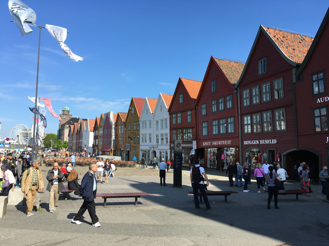
Norway's second largest city is in a magnificent setting surrounded by mountains and on a sparkling fjord. Its old city and the World Heritage site of Bryggen on the waterfront helped it be named European City of Culture in 2000.
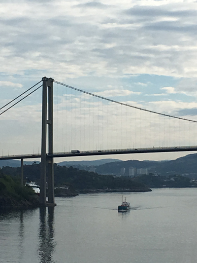
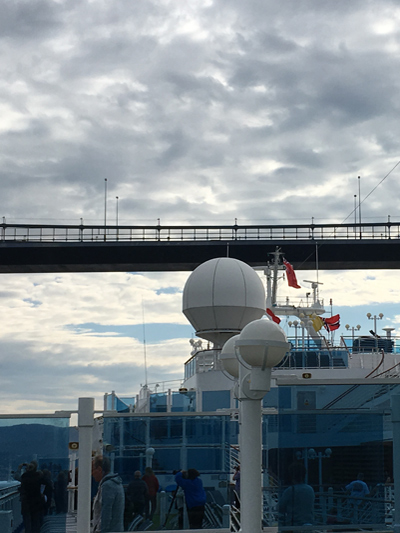
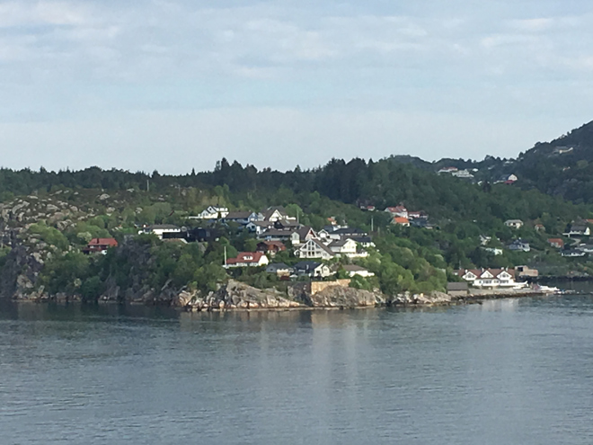
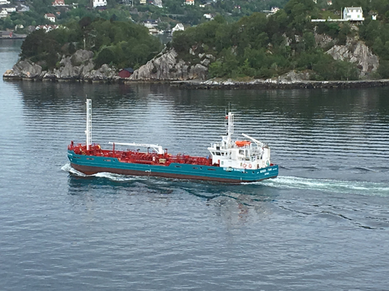
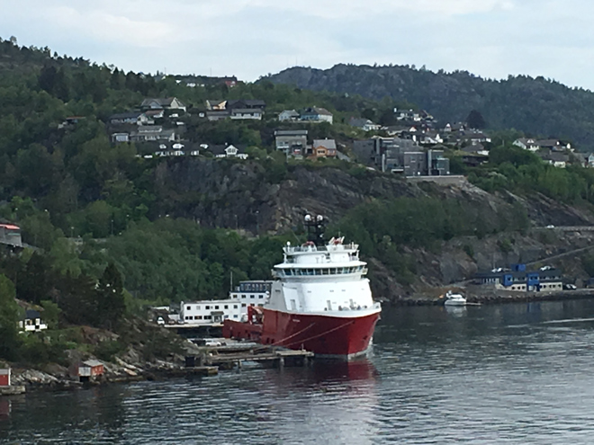
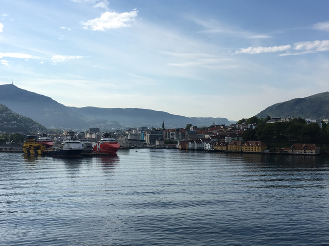
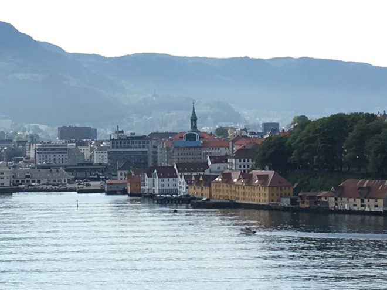
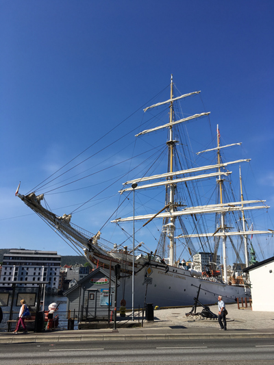
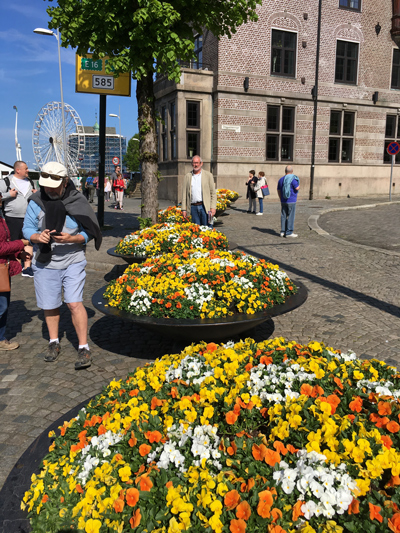
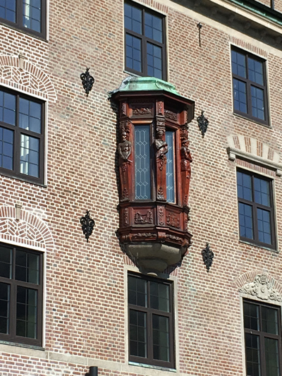
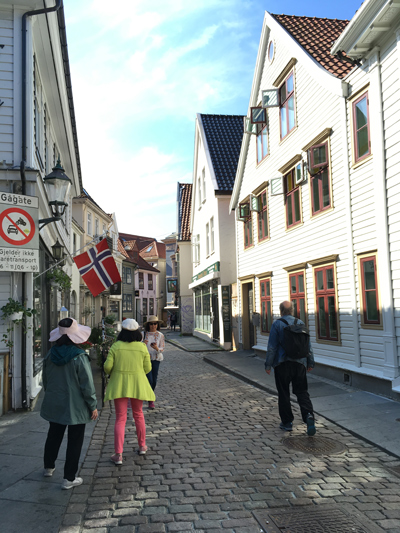
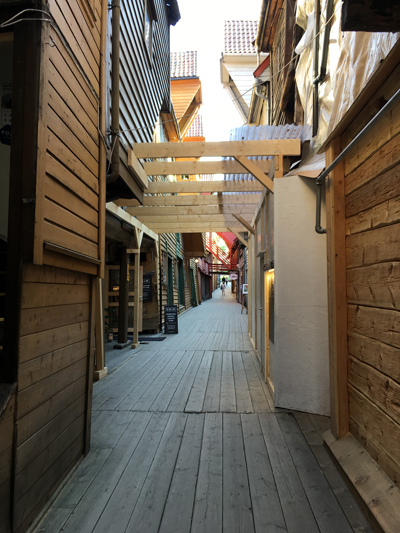
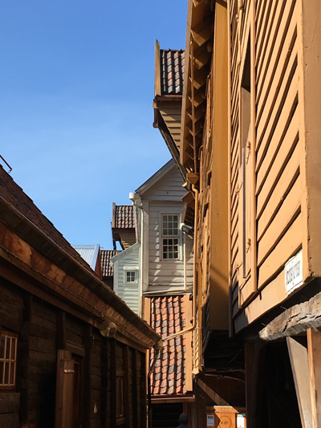
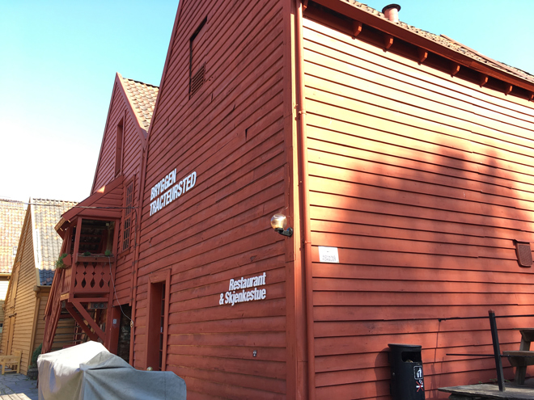
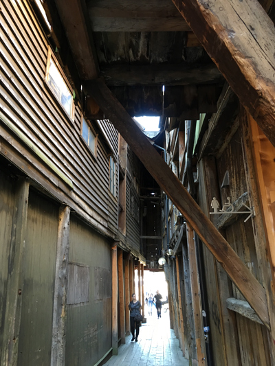
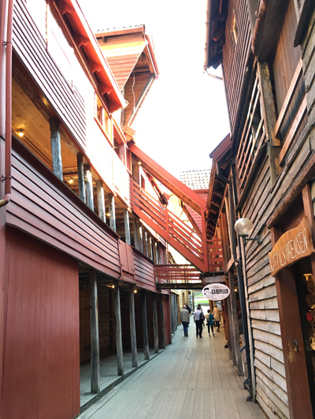
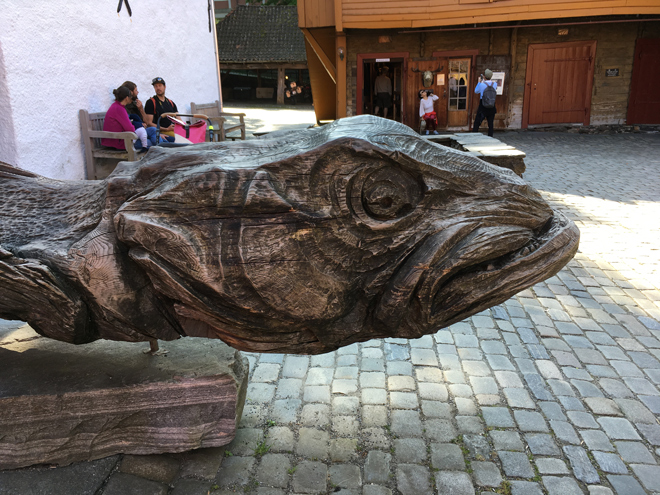
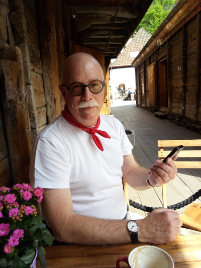
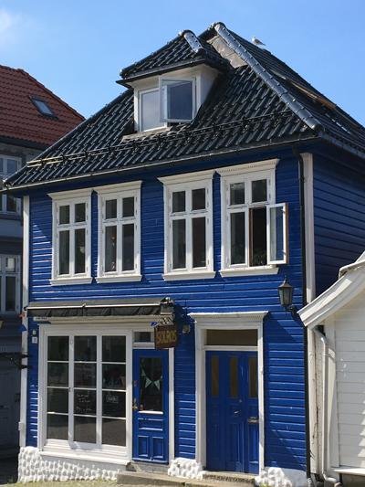
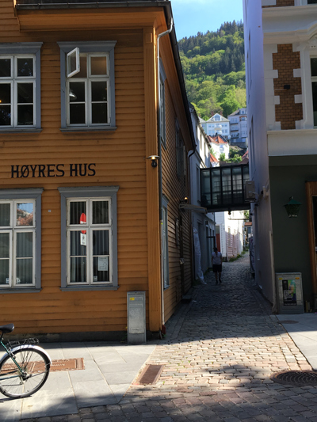
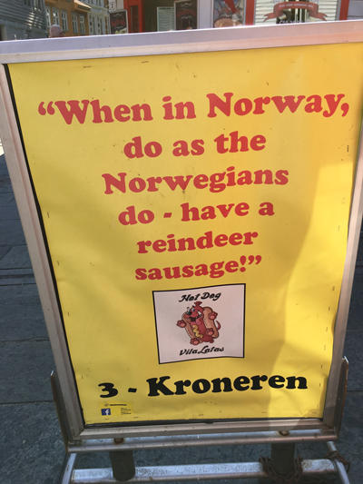
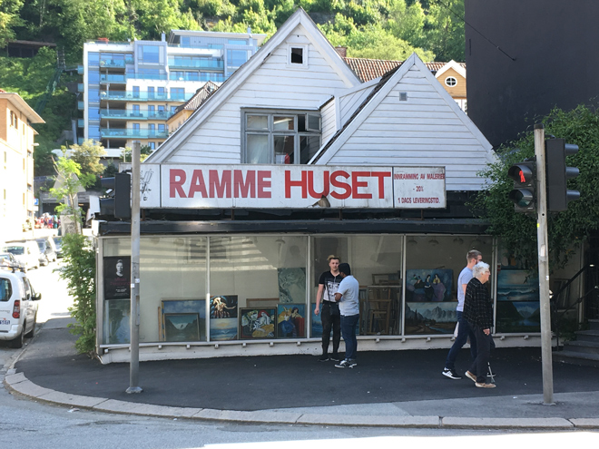
In the centre of town is a large park (Byparken) which is overlooked by pretty houses on the mountainside.
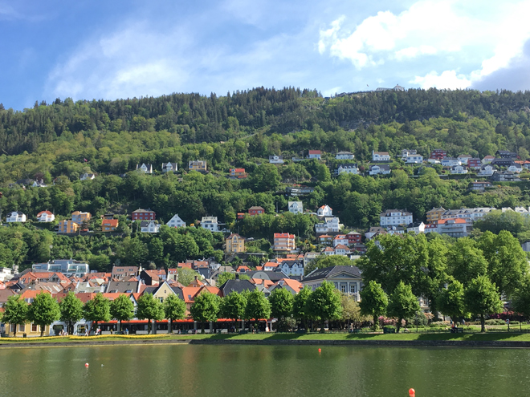